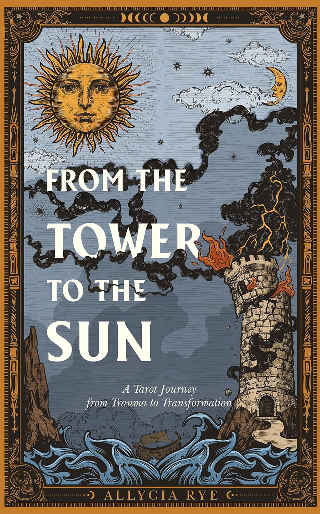
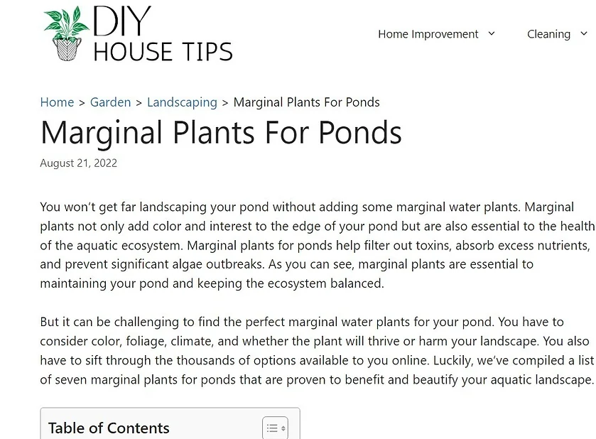

Coding Projects
Jane Austen Tribute Page
This was a simple tribute page I created for the freeCodeCamp Responsive Web Design certificate program.
Git Technical Documentation
This was a simple documentation I created for the freeCodeCamp Responsive Web Design certificate program.
Writing Projects
E-books
I've written a few e-books.
Chakra Healing with Shadow Work: Self-care To Integrate Your Shadow, Unblock your Chakras, and Become Whole
Description of book with link to some of my original pages and the published book.
From the Tower to the Sun: A Tarot Journey from Trauma to Transformation
Description of book with link to some of my original pages and the published book.
Business Plans
At Growthink, I had the opportunity to work on over 100 business plan templates across two of their websites: BusinessPlanTemplate.com and PlanBuildr.com. These templates are designed to help aspiring entrepreneurs create their own business plans, and I'm proud to have played a role in making the process easier for them. Published templates can be found on corresponding websites.
Articles
The primary deliverable I provie as a content writer is articles. I have ghostwritten dozens of articles throughout my career for a diverse clientele. My approach typically involves conducting thorough research on the topic, locating the most reliable and authoritative sources, and crafting content that is both informative and accessible. Below are a few examples of the many articles I've ghostwritten over the years.
Jessenia Pothos: Fun Facts, Care Tips & Common Problems
Marginal Plants For Ponds
13 Profit-Killing Email Marketing Mistakes You Need To Avoid
Other Writing Work
Voice-Over Scripts
I also had the opportunity to create several voice-over scripts for the app PictureThis. These scripts were designed to educate app users about common plants and provide general care information. I wrote the scripts for videos that featured different plants, highlighting their unique characteristics and care requirements. Below are a few examples of these scripts.
Animal Profiles
I was hired by a nonprofit organization called Save the Dark to write animal profiles that highlighted the importance of reducing light pollution. These profiles featured several nocturnal species that are threatened by the increasing levels of light pollution worldwide. The project required me to conduct extensive research on the animals and their habitats.